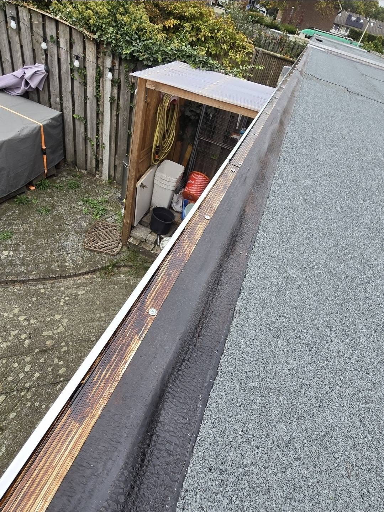
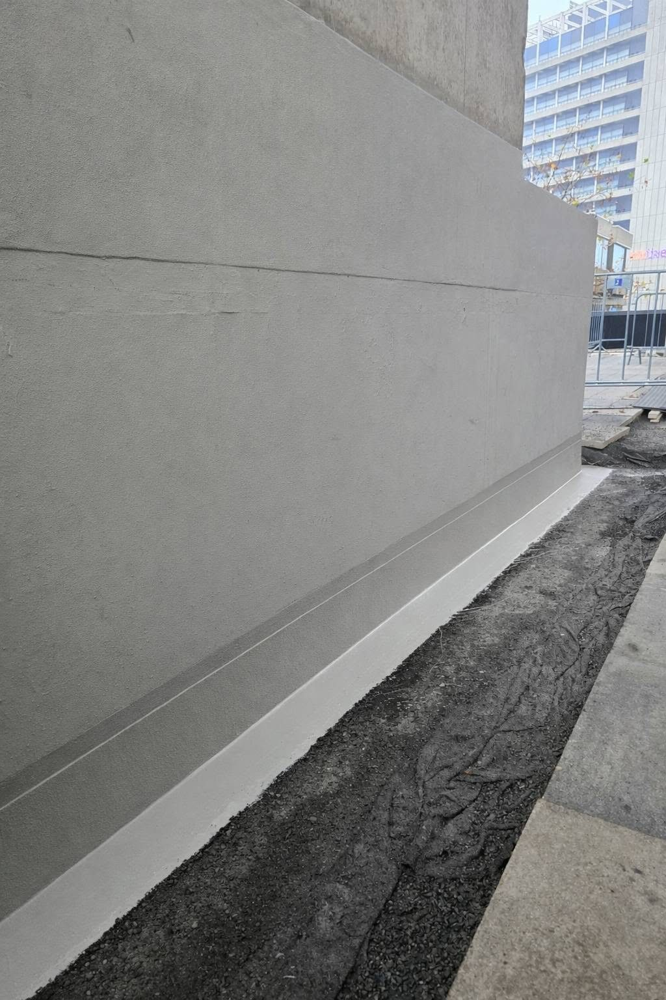

Pytania o pokrycia
Koszt krycia, zrywanie starej papy, wybór między papą a membraną oraz czas wykonania.
Krycie dachów płaskich →Zebraliśmy pytania, które padają w rozmowach telefonicznych i podczas oględzin. Odpowiedzi są konkretne na tyle, na ile da się odpowiedzieć bez wejścia na konkretny dach.

Koszt krycia, zrywanie starej papy, wybór między papą a membraną oraz czas wykonania.
Krycie dachów płaskich →
Jak szukamy miejsca, którym wchodzi woda, i kiedy naprawa miejscowa przestaje mieć sens.
Naprawa przecieków →
Remont tarasu, skuwanie okładziny, próg drzwi balkonowych i powłoki użytkowe.
Tarasy i balkony →Cena zależy od powierzchni połaci, wybranego systemu, liczby przebić i tego, czy stare pokrycie trzeba zrywać. Dwa dachy o tym samym metrażu potrafią różnić się kosztem o połowę, dlatego wycenę podajemy po oględzinach, a nie przez telefon.
Nie zawsze. Jeżeli termoizolacja pod pokryciem jest sucha, warstwy trzymają się podłoża, a strop ma zapas nośności, nowe pokrycie można ułożyć na starym. Zrywamy wtedy, gdy ocieplenie nasiąkło wodą albo warstw jest już kilka jedna na drugiej. Rozstrzyga to odkrywka kontrolna.
Papa termozgrzewalna dobrze znosi ruch pieszy i łatwo ją potem naprawić miejscowo. Membrany EPDM, PVC, TPO i FPO układa się szybciej na dużych połaciach, a przy ich montażu nie ma otwartego ognia. Wybór zależy od podłoża, liczby detali i tego, czy dach ma być użytkowy.
Dach garażu albo przybudówki zwykle zamyka się w jednym lub dwóch dniach roboczych. Połać domu jednorodzinnego to kilka dni, a hala z kilkunastoma wpustami i klapami dymowymi trwa dłużej, bo najwięcej czasu pochłaniają detale, a nie sama powierzchnia.
Część prac owszem, ale nie wszystkie. Zgrzewanie papy wymaga suchego podłoża i temperatury powyżej granicy podanej przez producenta materiału. Przy mrozie i śniegu zwykle wykonujemy doraźne zabezpieczenie miejsca przecieku, a pełne krycie planujemy na cieplejszy termin.
Zaczynamy od pytania, kiedy pojawia się zaciek: przy ulewie, po roztopach czy po kilku dniach opadów. Potem sprawdzamy wpusty, przebicia i styki z attyką, a w razie potrzeby robimy odkrywkę. Miejsce przecieku rzadko wypada dokładnie nad plamą na suficie.
Nie w każdym przypadku. Gdy pod okładziną jest sprawna izolacja, a problem siedzi w progu albo w krawędzi, wystarczy naprawa detalu. Skuwanie wchodzi w grę, gdy jastrych jest przemarznięty, płytki odchodzą całymi partiami albo izolacji pod nimi nigdy nie było.
Tak. Obsługujemy zarówno dachy domów, garaży i przybudówek, jak i duże połacie na halach oraz budynkach usługowych, w tym pokrycia na blasze trapezowej. Przy większych obiektach ustalamy harmonogram tak, aby prace nie kolidowały z działalnością w budynku.
Promień 60 km od Gostynina. Na co dzień jest to Płock i powiat płocki, a granice tego koła sięgają Kutna, Włocławka, Sierpca i Łęczycy. Poza nim jedziemy wtedy, gdy zlecenie jest na tyle duże, że da się je rozłożyć na kilka dni na miejscu. Podaj adres przez telefon, a powiemy od ręki, czy bierzemy.
Jeśli podasz je od razu, część spraw da się ocenić wstępnie już przy pierwszym telefonie.
Przybliżone wymiary połaci oraz to, czy mówimy o garażu, domu, przybudówce czy obiekcie usługowym.
Papa, membrana, blacha, a może kilka warstw jedna na drugiej. Przydaje się też rok ostatniego remontu, jeśli go znasz.
Gdzie widać wodę i kiedy: przy ulewie, po roztopach czy dopiero po dłuższych opadach. To zawęża listę przyczyn.
Zadzwoń i zapytaj wprost. Jeżeli sprawa wymaga wejścia na dach, umówimy oględziny w najbliższym wolnym terminie.